No gazetteers match.
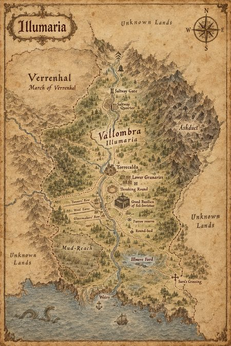
Gazetteer of IllumariaOne kingdom under two names: the map of Vallombra at its founding, and of Illumaria long after.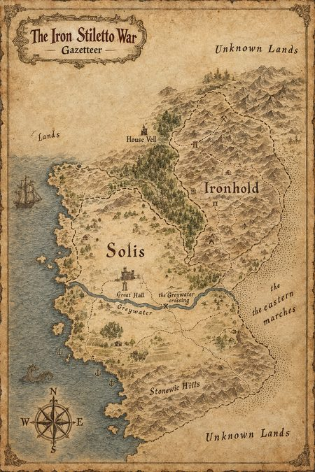
Gazetteer of the Iron Stiletto WarThe map of Case 4417: Solis, Ironhold, and the country between them.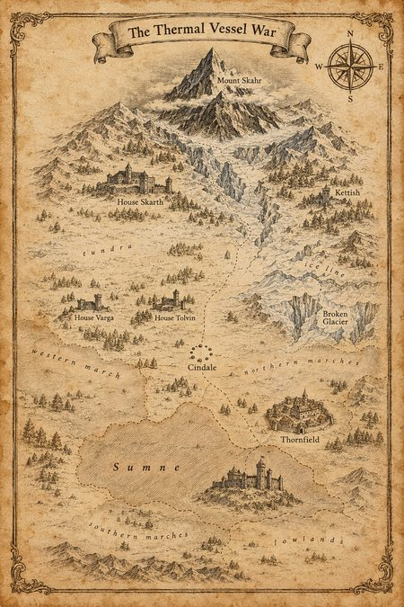
Gazetteer of the Vessel of the Betrayed HostThe map of Case 4420: Mount Skahr and House Skarth in the far north, the Broken Glacier, and the marches that run south to Sumne.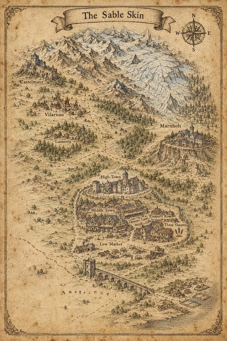
Gazetteer of the Sable SkinThe map of Case 4181: Marnholt and its three towns on the river Aure, the long bridge, and, in the corner, the three places Higaide carries with him from Case 2231.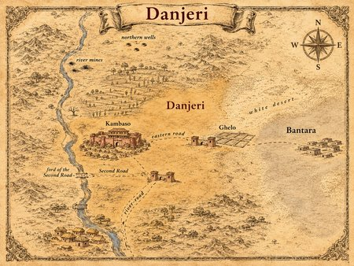
Gazetteer of DanjeriThe map of Case 0113: Kambaso beside the river, the Ghelo salt-pans on the rim of the white desert, and Bantara beyond them.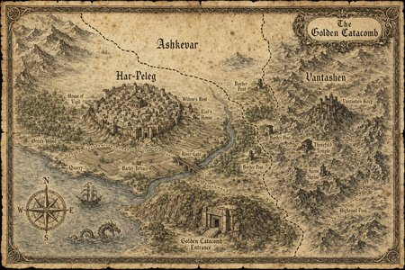
Gazetteer of the Golden CatacombThe map of Case 0157: Har-Peleg and its coast, the dashed border into the mountains of Vantashen, and the one entrance of the Golden Catacomb.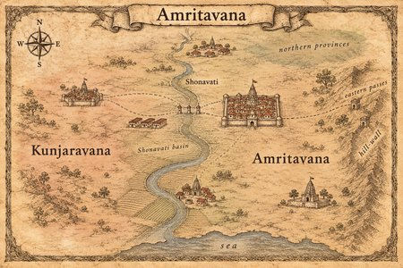
Gazetteer of AmritavanaThe map of Case 0188: the empire of Amritavana, the rival kingdom of Kunjaravana to its west, and the Shonavati river running down to the sea. Gazetteer of the Obliging SkyThe map of Case 0233: Samaghvto, the Place of the Gods, thirteen valleys of Vashkeni above it, and the plain of Orvaneti below.
Gazetteer of the Obliging SkyThe map of Case 0233: Samaghvto, the Place of the Gods, thirteen valleys of Vashkeni above it, and the plain of Orvaneti below.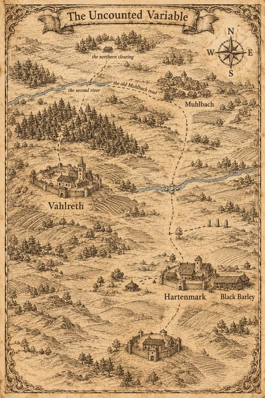
Gazetteer of the Uncounted VariableThe map of Case 0277: the fallen kingdom of Vahlreth, the old Muhlbach road to the north, and the walled capital of Hartenmark to the south.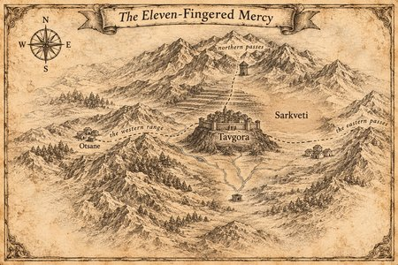
Gazetteer of the Eleven-Fingered MercyThe map of Case 1153: Tavgora on its rock, the kingdom of Sarkveti around it, and the unlabelled fold of the western range where Otsane hides.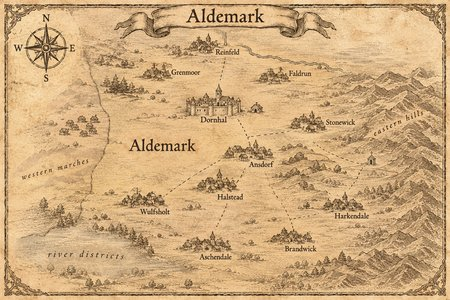
Gazetteer of AldemarkThe map of Case 1268: Aldemark and its capital Dornhal, ringed by the ten villages the Probe Network chose, one after another, for eleven days each.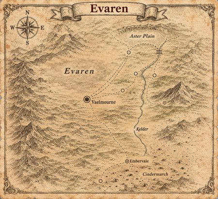
Gazetteer of EvarenThe map of Case 2114: Vaelmourne in the hills of Evaren, the river Kelder running south from Aster Plain to Embervale, and the cinder fields of the Cindermarch.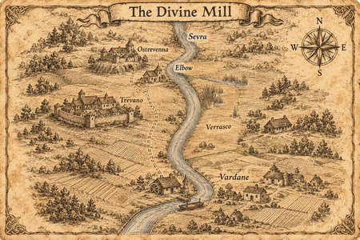
Gazetteer of the Divine MillThe map of Case 2140: the river Sevra, the county of Vardane and its mill, and the three neighbours, Verrasco, Trevano and Ostrevenna, whose quarrel over it set a continent to arming.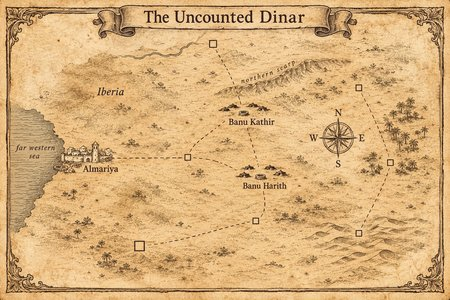
Gazetteer of the Uncounted DinarThe map of Case 3001: the grazing grounds of the Banu Kathir and the Banu Harith, the northern scarp above them, and the western sea at the end of Amina's wish.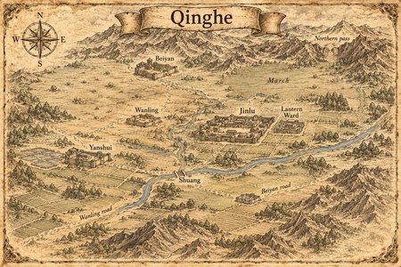
Gazetteer of QingheThe map of Case 3115: Jinlu on its river plain, the March of Beiyan to the north, Wanling to the west, and the Shuang crossing where a prince is shot. Gazetteer of the UncloudedThe map of Case 3312: the keep and walled enclosure of Takashiro, the valley of Kagetani, the plum terrace of its lord's garden, and the temple of Jakuen-ji whose lending the valley owes.
Gazetteer of the UncloudedThe map of Case 3312: the keep and walled enclosure of Takashiro, the valley of Kagetani, the plum terrace of its lord's garden, and the temple of Jakuen-ji whose lending the valley owes.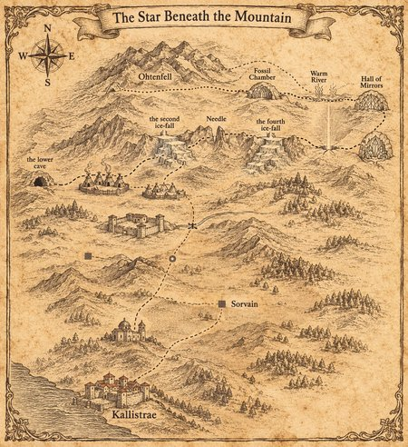
Gazetteer of the Star Beneath the MountainThe map of Case 3887: Kallistrae on its harbour, the road north past Sorvain to the ice-falls of Ohtenfell, and the caves where the star burns.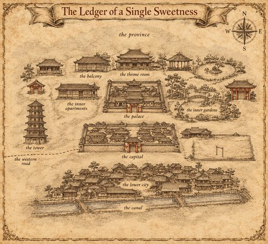
Gazetteer of the Ledger of a Single SweetnessThe map of Case 4099: the walled capital, the palace with its throne room, balcony, inner apartments and gardens, the tower, and the lower city on its canal.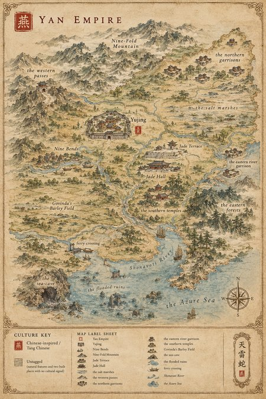
Gazetteer of the Yan EmpireThe map of Case 4438: Yujing and its Jade Hall, Nine Bends and the flooded ruins below it, and the western passes, northern garrisons and southern marshes of Yan.